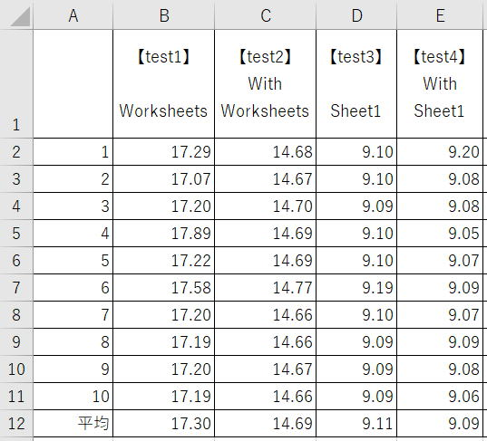

Withステートメントの実行速度と注意点

マクロVBAにおいてWithステートメントはとても重要です、
可読性（読みやすさ、理解しやすさ）、実行速度においては、その役割はとても大きいものになります。
速度に現れないメモリの違いは今日のPCにおいては考える必要はないでしょう。
実務においてのVBAコードを書く際の参考にしていただければよいと思います。
今回の結果と、以下のマクロVBA入門を参考にしてください。
第52回.オブジェクト変数とSetステートメント｜マクロVBA入門
マクロVBAのテストコード(Worksheet)
Option Explicit
Sub TestRun()
Dim i As Long
Dim ary(1 To 10, 1 To 6) As Double
For i = 1 To 10
DoEvents
ary(i, 1) = test1
DoEvents
ary(i, 2) = test2
DoEvents
ary(i, 3) = test3
DoEvents
ary(i, 4) = test4
DoEvents
ary(i, 5) = test5
DoEvents
ary(i, 6) = test6
Next
Range("B2:G11") = ary
MsgBox "完了"
End Sub
Function test1() As Double
Dim i As Long
Dim v As Variant
Dim t As Double
t = Timer
For i = 1 To 1000000
v = Worksheets(1).Cells(i, 1).Value
v = Worksheets(1).Cells(i, 2).Value
v = Worksheets(1).Cells(i, 3).Value
Next
test1 = Timer - t
End Function
Function test2() As Double
Dim i As Long
Dim v As Variant
Dim t As Double
t = Timer
With Worksheets(1)
For i = 1 To 1000000
v = .Cells(i, 1).Value
v = .Cells(i, 2).Value
v = .Cells(i, 3).Value
Next
End With
test2 = Timer - t
End Function
Function test3() As Double
Dim i As Long
Dim v As Variant
Dim t As Double
t = Timer
For i = 1 To 1000000
v = Sheet1.Cells(i, 1).Value
v = Sheet1.Cells(i, 2).Value
v = Sheet1.Cells(i, 3).Value
Next
test3 = Timer - t
End Function
Function test4() As Double
Dim i As Long
Dim v As Variant
Dim t As Double
t = Timer
With Sheet1
For i = 1 To 1000000
v = .Cells(i, 1).Value
v = .Cells(i, 2).Value
v = .Cells(i, 3).Value
Next
End With
test4 = Timer - t
End Function
Function test5() As Double
Dim i As Long
Dim v As Variant
Dim t As Double
t = Timer
Dim ws As Worksheet
Set ws = Worksheets(1)
For i = 1 To 1000000
v = ws.Cells(i, 1).Value
v = ws.Cells(i, 2).Value
v = ws.Cells(i, 3).Value
Next
test5 = Timer - t
End Function
Function test6() As Double
Dim i As Long
Dim v As Variant
Dim t As Double
t = Timer
Dim ws As Worksheet
Set ws = Worksheets(1)
With ws
For i = 1 To 1000000
v = .Cells(i, 1).Value
v = .Cells(i, 2).Value
v = .Cells(i, 3).Value
Next
End With
test6 = Timer - t
End Function
| 【test1】 Worksheets |
【test2】 With Worksheets |
【test3】 Sheet1 |
【test4】 With Sheet1 |
【test5】 Worksheet変数 |
【test6】 With Worksheet変数 |
|
| 1 | 17.29 | 14.68 | 9.10 | 9.20 | 9.07 | 9.09 |
| 2 | 17.07 | 14.67 | 9.10 | 9.08 | 9.07 | 9.10 |
| 3 | 17.20 | 14.70 | 9.09 | 9.08 | 9.06 | 9.08 |
| 4 | 17.89 | 14.69 | 9.10 | 9.05 | 9.07 | 9.09 |
| 5 | 17.22 | 14.69 | 9.10 | 9.07 | 9.05 | 9.07 |
| 6 | 17.58 | 14.77 | 9.19 | 9.09 | 9.06 | 9.07 |
| 7 | 17.20 | 14.66 | 9.10 | 9.07 | 9.05 | 9.07 |
| 8 | 17.19 | 14.66 | 9.09 | 9.09 | 9.07 | 9.09 |
| 9 | 17.20 | 14.67 | 9.09 | 9.08 | 9.06 | 9.10 |
| 10 | 17.19 | 14.66 | 9.09 | 9.06 | 9.05 | 9.09 |
| 平均 | 17.30 | 14.69 | 9.11 | 9.09 | 9.06 | 9.08 |
つまり、
test3～test6は同じであるという事です。
ただし、
test1もtest2も、少し時間がかかっているとはいえ、
1,000,000×3回の結果である事を忘れないでください。
WithステートメントのVBA内部の処理説明は難しく、そもそも推測でしか語ることができません。
ここでは、中途半端に推測で語ることはせずに、この結果をそのままお伝えします。
Worksheets()の記述が遅いのであって、Withが直接関係しているのではないという事です。
マクロVBAのテストコード(Range)
Option Explicit
Sub TestRun2()
Dim i As Long
Dim ary(1 To 10, 1 To 4) As Double
For i = 1 To 10
DoEvents
ary(i, 1) = test1
DoEvents
ary(i, 2) = test2
DoEvents
ary(i, 3) = test3
DoEvents
ary(i, 4) = test4
Next
Range("B2:E11") = ary
MsgBox "完了"
End Sub
Function test1() As Double
Dim i As Long
Dim v As Variant
Dim t As Double
t = Timer
For i = 1 To 1000000
v = Range("A1").Value
v = Range("A1").Value
v = Range("A1").Value
Next
test1 = Timer - t
End Function
Function test2() As Double
Dim i As Long
Dim v As Variant
Dim t As Double
t = Timer
With Range("A1")
For i = 1 To 1000000
v = .Value
v = .Value
v = .Value
Next
End With
test2 = Timer - t
End Function
Function test3() As Double
Dim i As Long
Dim v As Variant
Dim t As Double
t = Timer
Dim rng As Range
Set rng = Range("A1")
For i = 1 To 1000000
v = rng.Value
v = rng.Value
v = rng.Value
Next
test3 = Timer - t
End Function
Function test4() As Double
Dim i As Long
Dim v As Variant
Dim t As Double
t = Timer
Dim rng As Range
Set rng = Range("A1")
With rng
For i = 1 To 1000000
v = .Value
v = .Value
v = .Value
Next
End With
test4 = Timer - t
End Function
実行速度の実測値
| 【test1】 .Range("A1") |
【test2】 With .Range("A1") |
【test3】 Range変数 |
【test4】 With Range変数 |
|
| 1 | 18.00 | 4.30 | 4.29 | 4.29 |
| 2 | 17.78 | 4.29 | 4.29 | 4.29 |
| 3 | 17.74 | 4.29 | 4.31 | 4.29 |
| 4 | 17.76 | 4.29 | 4.29 | 4.29 |
| 5 | 17.73 | 4.28 | 4.29 | 4.29 |
| 6 | 17.74 | 4.29 | 4.30 | 4.30 |
| 7 | 17.74 | 4.28 | 4.29 | 4.29 |
| 8 | 17.78 | 4.28 | 4.29 | 4.29 |
| 9 | 17.77 | 4.29 | 4.29 | 4.29 |
| 10 | 17.75 | 4.29 | 4.29 | 4.30 |
| 平均 | 17.78 | 4.29 | 4.29 | 4.29 |
test2以降ではWorksheetでの結果に比べて短時間で済んでいるという事と、
test1だけが極端に遅いという事です。
Worksheets()、これはコレクションからインデックスを指定してオブジェクトにアクセスしています。
Rangeでのテストコードでは、これが無い分速いという事です。
そして、Range()やCells()も同様で、コレクションとしてのRangeオブジェクトから特定のセルにアクセスしていますので、この部分に時間がかかります。
これらをWithまたはSetで1回で済ませることで、高速化されているという事になります。
Worksheets()
Range()
Cells
これらの記述が少なければ少ないほど高速化されるという事になります。
Withステートメントの注意点
For i = 1 To 1000000
With Worksheets(1)
・・・
End With
Next
これではWithによる速度効果はほとんどありません。
Sub sample2()
With Range("A1")
Debug.Print .Address
Rows(1).Insert
Debug.Print .Address
End With
End Sub
$A$1
$A$2
このようにイミディエイトウインドウに出力されます。
WithでRange("A1")と書かれていても、必ずしもA1セルを参照しているとは限りません。
Withの中で、オブジェクトの位置をずらすようなVBAコードは書かないほうが良いでしょう。
With Worksheets(1)
Dim hoge As Long
・・・
End With
この変数hogeは、End Withの下でも使用できてしまいまい。
Withに限らず、
VBAではブロック構文内の変数宣言が、ブロック外に対して隠蔽されません。
ブロック構文内で宣言した変数は、ブロック外では使用しないようにしましょう。
最後に
数千行から数万行程度なら、どんな書き方をしたとしても体感として速度差を感じることはほとんどないでしょう。
その程度のデータ量で時間がかかっている場合は、他の原因によるものだという事です。
[Worksheets().]Rangeを並べた書き方はWithステートメントを使うようにした方が良い事は間違いありません。
可読性や記述の簡便さを主に考えれば良いでしょうという事になります。
同じテーマ「マクロVBA技術解説」の記事
エクセルVBAのパフォーマンス・処理速度に関するレポート
VBAのFindメソッドの使い方には注意が必要です
マクロVBAの高速化・速度対策の具体的手順と検証
動的2次元配列の次元を入れ替えてシートへ出力（Transpose）
大量データで処理時間がかかる関数の対処方法（SumIf）
大量データにおける処理方法の速度王決定戦
遅い文字列結合を最速処理する方法について
大量VlookupをVBAで高速に処理する方法について
Withステートメントの実行速度と注意点
IfステートメントとIIF関数とMax関数の速度比較
スピルって速いの?スピルの速度について
新着記事NEW ・・・新着記事一覧を見る
VBA100本ノック 100本目：WEBから100本ノックのリストを取得｜VBA練習問題（3月3日）
VBA100本ノック 99本目：自動席替え（行列と前後左右が全て違うように）｜VBA練習問題（3月2日）
VBA100本ノック 98本目：席替えルールが守られているか確認｜VBA練習問題（3月1日）
VBA100本ノック 97本目：Accessデータを取得（グループ集計）｜VBA練習問題（2月27日）
VBA100本ノック 96本目：Accessデータを取得（マスタ結合&抽出）｜VBA練習問題（2月26日）
VBA100本ノック 95本目：図形のテキストを検索するフォーム作成｜VBA練習問題（2月24日）
VBA100本ノック 94本目：表範囲からHTMLのtableタグを作成｜VBA練習問題（2月23日）
VBA100本ノック 93本目：複数ブックを連結して再分割｜VBA練習問題（2月22日）
VBA100本ノック 92本目：セルの色を16進で返す関数｜VBA練習問題（2月20日）
VBA100本ノック 91本目：時間計算（残業時間の月間合計）｜VBA練習問題（2月19日）
アクセスランキング ・・・ ランキング一覧を見る
1.最終行の取得（End,Rows.Count）｜VBA入門
2.RangeとCellsの使い方｜VBA入門
3.変数宣言のDimとデータ型｜VBA入門
4.マクロって何？VBAって何？｜VBA入門
5.Range以外の指定方法（Cells,Rows,Columns）｜VBA入門
6.セルのコピー&値の貼り付け（PasteSpecial）｜VBA入門
7.繰り返し処理（For Next)｜VBA入門
8.セルに文字を入れるとは（Range,Value）｜VBA入門
9.マクロはどこに書くの（VBEの起動）｜VBA入門
10.とにかく書いてみよう（Sub,End Sub）｜VBA入門
- ホーム
- マクロVBA応用編
- マクロVBA技術解説
- Withステートメントの実行速度と注意点
このサイトがお役に立ちましたら「シェア」「Bookmark」をお願いいたします。
記述には細心の注意をしたつもりですが、
間違いやご指摘がありましたら、「お問い合わせ」からお知らせいただけると幸いです。
掲載のVBAコードは動作を保証するものではなく、あくまでVBA学習のサンプルとして掲載しています。
掲載のVBAコードは自己責任でご使用ください。万一データ破損等の損害が発生しても責任は負いません。